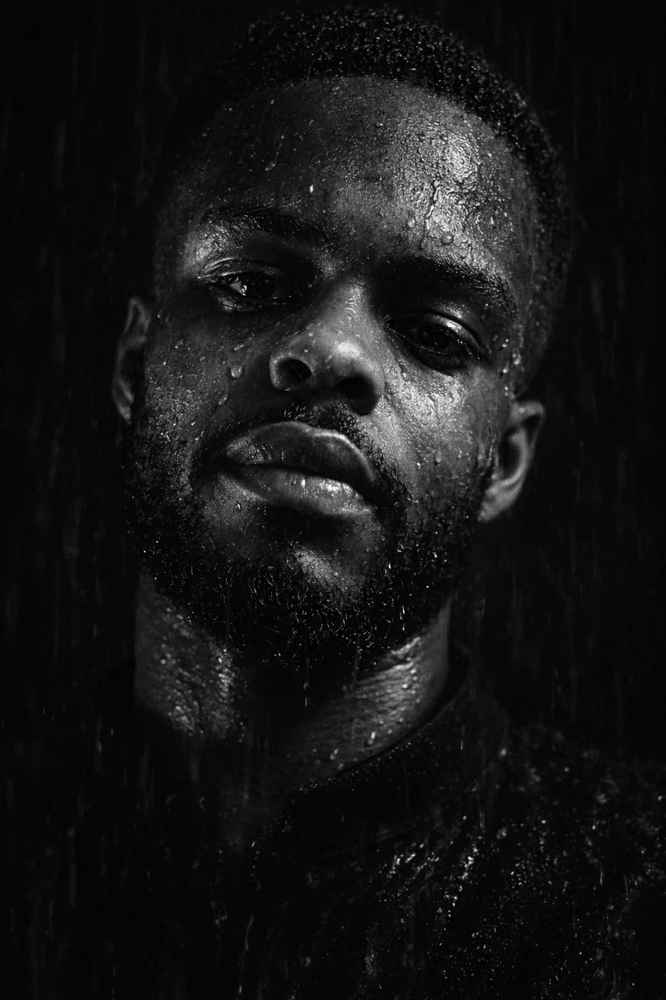
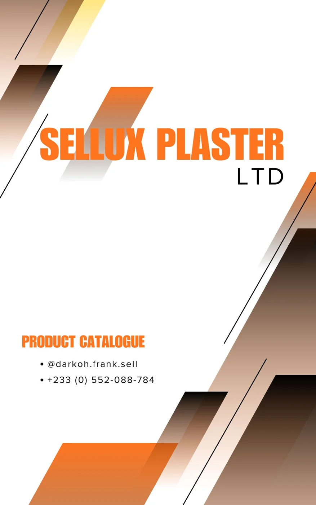

01 / Software · Retail
DwasoPOS
A point-of-sale system for retail businesses, bringing sales, inventory, and receipt printing into one workflow, with support for working offline.
Explore the project
Developer · Designer · Educator
I’m Samuel. I build digital tools and visual identities that help people work, learn, and communicate.
From retail systems to classroom resources, I bring code, design, and a teacher’s eye for clarity.
A few things I’ve worked on
01 / Software · Retail
A point-of-sale system for retail businesses, bringing sales, inventory, and receipt printing into one workflow, with support for working offline.
Explore the projectSoftware
An exam preparation platform for Ghanaian junior high schools, with question banks, student performance insights, and subscription payments.

Websites
A product catalogue and quotation website for architectural finishes, making it easier to explore materials and plan a project.
Beyond the code
Teaching Mathematics and Computing has shaped how I approach a problem: understand it, break it down, and make the next step clear. I bring that same care to interfaces, software, and visual communication.
More about my background